Learning Objectives After completing this chapter, you should be able to:
Distinguish between open-loop and closed-loop control systems and classify real-world examples into each category.
Identify the components of a feedback loop: reference, error, controller, actuator, plant, sensor, and disturbance.
Draw and interpret block diagrams for feedback control systems.
Derive the closed-loop transfer function for a unity-feedback system and compute the effect of disturbances.
Explain why feedback attenuates disturbances and improves tracking accuracy, using the cruise control and volume control examples.
Describe the effect of hysteresis in on–off control and explain its practical purpose.
Control systems are everywhere. From the moment we wake up to the moment we go to sleep, we interact with systems that quietly measure, decide, and adjust in order to achieve a desired outcome. When your alarm clock rings at the correct time, when the central heating keeps a room comfortable, when a lift stops precisely level with the floor, or when a washing machine automatically selects the correct cycle — control is at work behind the scenes.
At its simplest, control engineering is about making things behave in the way we want. It allows us to regulate temperature, speed, position, pressure, voltage, and countless other physical quantities. Without control systems, many everyday tasks would require constant human supervision. With control systems, processes can run automatically, safely, and efficiently.
Control also enables us to go beyond normal human capability. Modern aircraft remain stable in turbulent conditions thanks to automatic flight control systems. Industrial robots position components with millimetre or even micrometre accuracy. Spacecraft navigate millions of kilometres through space with remarkable precision. In medicine, devices such as insulin pumps continuously monitor and regulate blood glucose levels. These achievements are possible because of carefully designed control systems.
Interestingly, control is not purely an engineering concept — it is also fundamental to nature. The human body continuously regulates its internal temperature, blood pressure, and oxygen levels through feedback mechanisms. When you feel cold, your body shivers to generate heat; when you are too warm, you sweat to cool down. This natural process of measurement, comparison, and correction is the same basic principle used in engineered control systems.
In engineering practice, well-designed control systems bring significant benefits. They improve safety by reducing human error, increase efficiency by minimising waste and energy consumption, enhance reliability by compensating for disturbances, and reduce cost through automation. In many cases, a system would simply not function without control.
In this module, you will learn how to model dynamic systems, analyse their behaviour, and design controllers that achieve stability, accuracy, and robustness. Although the mathematical tools may at first seem challenging, they provide a powerful framework for understanding and shaping the behaviour of real-world systems.
By the end of this course, you will be able to analyse a system, predict its behaviour, and design a controller that makes it do what you want.
Feedback appears wherever a system measures its current state, compares it with a desired condition, and adjusts accordingly. The examples below illustrate how pervasive this principle is.
In everyday life, feedback appears in devices that seem ordinary precisely because they regulate themselves so effectively. Voice assistants can adjust their volume or microphone sensitivity when the surrounding noise changes. Elevators reopen their doors when sensors detect that a passenger is still entering, while navigation apps recalculate a route as soon as the driver misses a turn. Traffic lights equipped with sensors adapt their timing to traffic conditions, smart fridges maintain their internal temperature even when the door is opened repeatedly, and fitness watches monitor heart rate and prompt the user to slow down or speed up. Coffee machines regulate water temperature and pressure while stopping the pour at the right moment, and central heating systems compare the measured room temperature with the thermostat setting before deciding whether to switch the boiler on or off.
In engineering and technology, feedback is even more central. Aircraft autopilots continuously adjust control surfaces to keep the aircraft level and on course despite turbulence. Wind turbines vary blade pitch so that they capture useful energy without overloading the mechanism, and medical ventilators measure oxygen and pressure levels before adjusting airflow to match the patient’s needs. Robotic arms in manufacturing rely on sensors to keep welding, assembly, and positioning accurate; electric vehicle battery management systems regulate temperature and charge for safety and efficiency; drones use gyroscopes and accelerometers to stabilise flight; and industrial control systems keep pressure, temperature, and chemical concentration within safe operating limits.
Biological and natural systems also depend heavily on feedback. Blood sugar regulation relies on insulin and glucagon acting in opposition to keep glucose within a safe range. Body temperature is stabilised through sweating or shivering, balance during walking is maintained by feedback from the inner ear, muscles, and eyes, and pupil size changes automatically in response to light. At a larger scale, ecosystems exhibit feedback when predator and prey populations influence one another and create recurring population cycles.
Feedback is not confined to physical systems. In economics and social systems, central banks change interest rates in response to inflation and economic growth, supply and demand interact through price changes, stock markets can amplify movements when investors react to recent trends, and public health policies are tightened or relaxed in response to infection rates, which then alter future transmission.
Traffic and infrastructure provide further examples. Adaptive cruise control changes a vehicle’s speed to maintain a safe distance from the car ahead. On motorways, congestion can emerge when small disturbances are amplified through positive feedback. In water reservoir management, release rates are adjusted according to rainfall and storage level so that flooding and shortages can both be avoided.
Climate and environmental systems also involve powerful feedback mechanisms. Ice melt reduces surface reflectivity and increases heat absorption, which is a classic example of positive feedback. By contrast, the carbon cycle contains balancing effects, since plant growth can absorb carbon dioxide and partially offset emissions.
Even playful or unexpected systems are shaped by feedback. Video game controllers use haptic feedback to influence the player’s actions, concert sound systems must suppress unwanted audio feedback to avoid screeching, and social media platforms alter what they show users in response to previous interaction, often reinforcing viewing patterns.
Control systems fall into two categories: open-loop and closed-loop. In an open-loop system, the control action is applied without measuring the output, so performance depends entirely on prior calibration. In a closed-loop system, the output is measured and compared with the reference. The difference (the error) adjusts the control action, making the system more accurate and resistant to disturbances.
An open-loop control system has the general form illustrated in Figure 1.1. Here, the desired input \(y_d\) is processed by a controller to produce a control signal \(u\), which is applied to the plant via an actuator. The plant produces the output \(y\).
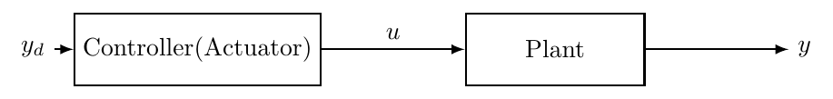
Key characteristics of open-loop control: Open-loop control depends strongly on calibration: the controller must be tuned beforehand if the system is to perform correctly. Because the output is not measured, the controller is effectively blind; it has no way of knowing whether the desired result has actually been achieved, and it cannot correct its own mistakes. For the same reason, open-loop systems are sensitive to disturbances and model changes, since any unexpected variation in the plant appears directly at the output.
A toaster toasts bread by setting a timer, as illustrated in Figure 1.2. The objective is to make the bread golden browned and crisp. However, the toaster does not measure the colour of the bread during the toasting process. For a fixed timer setting, the result can vary: in winter, the toast may remain pale, while in summer it may burn and turn black. This illustrates that calibration is crucial in open-loop systems. A more sophisticated toaster could use sensors to measure the bread’s colour and actuators to adjust the timer accordingly, but this would increase both the cost and the complexity of the device.
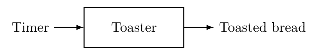
A laundry machine washes clothes by running a program selected by the user, as shown in Figure 1.3. The program determines how long the machine agitates, rinses, and spins the clothes. The machine does not measure how clean the clothes actually become during the cycle. As a result, for the same program setting, some clothes may still remain dirty while others may be over-washed, depending on the load size, type of fabric, or how soiled the clothes were initially. This lack of feedback means that the performance of the machine depends entirely on the correct choice of program.
Control without measuring devices such as sensors is therefore called open-loop control.
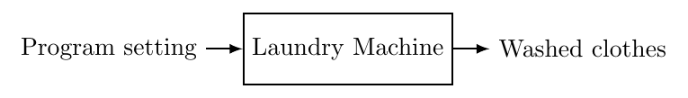
Despite their different appearances, all the examples above share a common structure.
For instance, in a thermostat, the actual room temperature is measured, compared with the temperature you set, and the heating is switched on or off accordingly. In cruise control, the car’s actual speed is measured, compared with the chosen set speed, and the throttle is adjusted to reduce any mismatch. In the human body, internal temperature is monitored against a safe range, and the body responds by sweating or shivering so that the temperature remains close to \(36\,^{\circ}\mathrm{C}\) to \(37\,^{\circ}\mathrm{C}\).
What all of these systems have in common is a reference (or set point), a measurement of what is actually happening, a comparison between desired and actual behaviour, and an action that reduces the difference. This is the essential structure of a feedback control system.
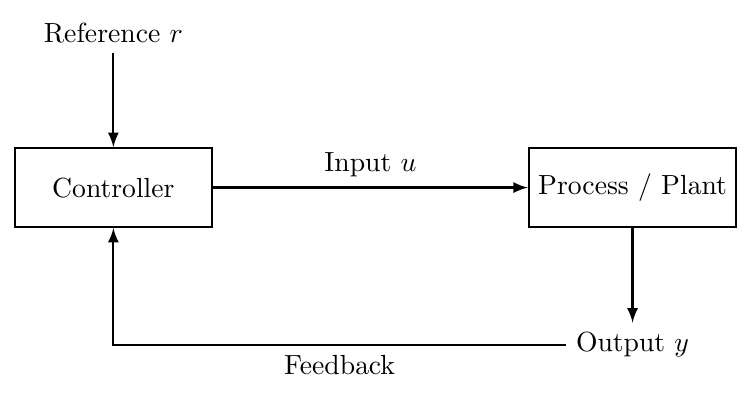
This simple diagram in Figure 1.4 captures the essence of all the systems we have seen:
Feedback compares what we want with what we get, and acts to reduce the gap.
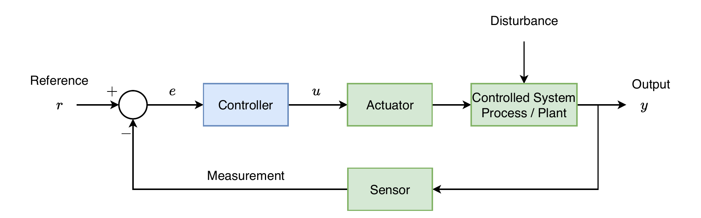
In practice, real feedback systems include physical components beyond the controller and plant. Figure 1.5 provides a more detailed representation.
The error \(e\) is formed by comparing the desired reference \(r\) with the measured output from the sensor. The controller processes this error and generates a control signal \(u\), which is sent to the actuator. The actuator converts this signal into a physical action that drives the controlled system (the plant). At the same time, the system is affected by disturbances, which may push the output \(y\) away from its desired behaviour. The sensor measures the actual output and sends the measurement back for comparison, closing the loop.
The summing junction is the comparison point, represented by the circular element in Figure 1.5, where the error signal \(e(t)=r(t)-y(t)\) is formed. A thermostat comparator that subtracts the measured room temperature from the user’s setting is a simple example. The controller is the decision-making element of the loop: it processes the error according to a control law such as PID, LQR, or MPC and determines the control effort \(u\). A drone flight computer that stabilises orientation from IMU data plays this role. The actuator then converts that usually low-power command into physical action, such as force, torque, flow, or voltage; examples include an electric motor in a robot joint or a hydraulic valve in an aircraft mechanism. The plant is the physical process being regulated, such as the vehicle in a cruise control problem or a heat exchanger in a chemical plant. disturbance refers to unwanted external influences, such as wind gusts or load changes, that push the plant away from its desired behaviour. Finally, the sensor closes the loop by measuring the actual output and converting it into a usable signal; a tachometer, a thermometer, or an ultrasonic range sensor all serve this purpose. The quality of feedback control therefore depends not only on the controller itself, but also on the actuators, sensors, and disturbances present in the real system.
Room Heating System
A familiar case is the heating of a room in a house.
In this example, the reference \(r\) is the temperature chosen by the user on the thermostat, for example \(21\,^{\circ}\mathrm{C}\). The error \(e\) is the difference between this desired value and the measured room temperature. The controller is the thermostat logic that decides whether to switch the heating system on or off, or, in more advanced designs, how much power to request. The actuator is the boiler or heating unit, the plant is the room and its contents, the disturbances include open windows, outside weather, and heat from people or appliances, and the sensor is the thermometer inside the thermostat that measures the actual room temperature. Figure [fig:heater_overview] illustrates the complete system.
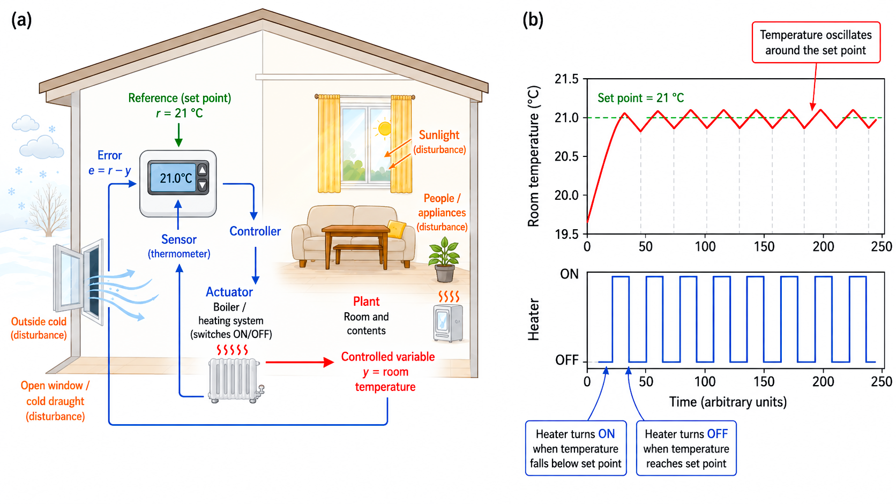
In this example, the controller’s task is to ensure that the room temperature remains close to the user’s chosen set point, despite disturbances such as cold draughts or the heat generated by sunlight. This illustrates how the theoretical components of the feedback diagram correspond directly to real physical elements in a system we encounter daily.
Figure [fig:heatercontrolonoff] shows the variation of the room temperature and the operation of the controller (ON/OFF). Notice how the heater switches on whenever the temperature drops slightly below the set point and switches off as soon as the set point is reached. As a result, the temperature oscillates around the desired value. This type of control is called onoff, or sometimes bang–bang control.
While simple and inexpensive to implement, pure on–off control has an important drawback: the heater may switch very frequently near the set point, which can cause wear and tear on the equipment and waste energy. Moreover, the temperature never settles exactly at the desired value; there is always a small error due to the switching.
A practical improvement is to introduce a control band (sometimes called hysteresis). Instead of switching exactly at the set point, the heater is turned on only when the temperature falls below a lower threshold, and turned off only when it rises above an upper threshold. Figure [fig:heatercontrolonoffhysterisis] illustrates this approach. The two green dashed lines indicate the band around the set point. Within this band, the heater does not switch, so the controller avoids rapid toggling. The result is smoother operation, reduced wear on the actuator, and greater overall efficiency. Although the temperature still oscillates, the switching is far less frequent and the system performance is significantly improved.
This improvement is useful, but it is only a starting point. In the upcoming chapters, you will learn how more advanced control methods (such as proportional, integral, and derivative control) can achieve far smoother, more accurate, and energy-efficient regulation.
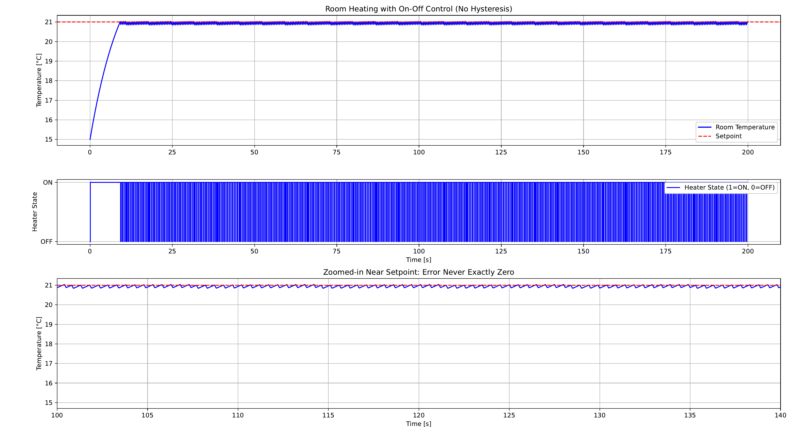
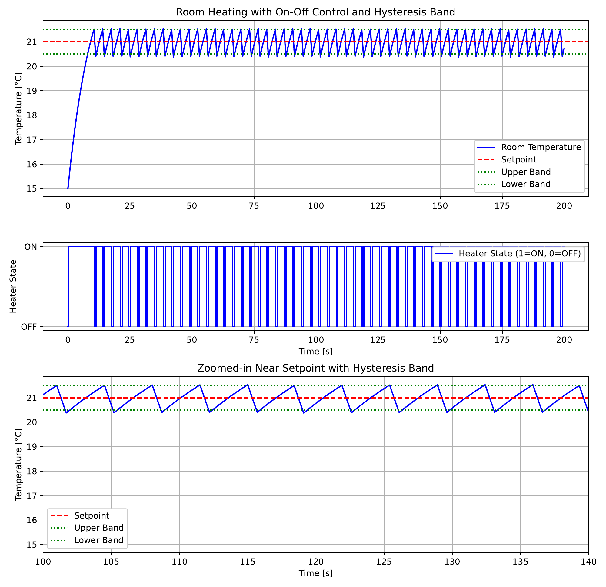
Automatic Volume Control in a Car Radio
Imagine you are driving on a motorway while listening to the radio. You set the volume to a comfortable level. However, as the speed of the car increases, the road and wind noise also increase. As a result, the music becomes difficult to hear. Without an automatic adjustment system, you would need to manually increase the volume. This is an example of an open–loop system.
In the open–loop case shown in Figure [fig:exsoundol], the system has no way of knowing whether the output (sound in the cabin) is adequate. It simply multiplies the driver’s volume setting by a fixed amplifier gain. Any additional noise directly affects the output.
\[y = K r + d\] where \(r\) denotes the driver’s desired volume setting, \(K\) is the amplifier gain, \(d\) represents the disturbance caused by road noise, and \(y\) is the resulting sound level in the cabin.
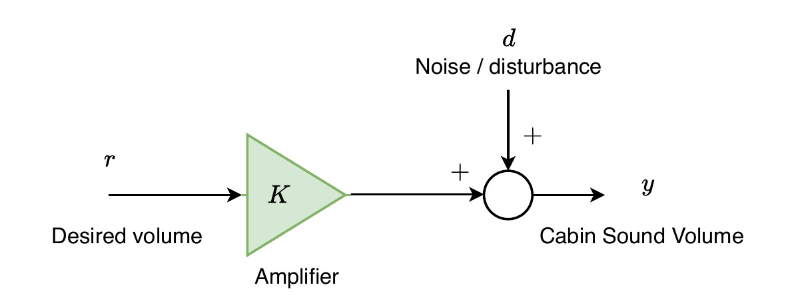
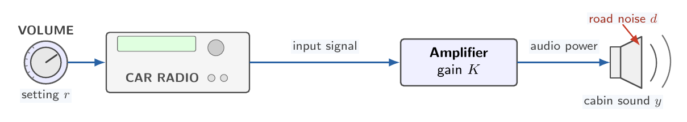
To improve performance, a small microphone is placed in the cabin to measure the actual sound level \(y\). The measured sound is compared with the desired setting \(r\), and the difference, called the error \(e\), is used by the controller to adjust the amplifier gain. This arrangement creates a feedback system, also called a closed–loop system.
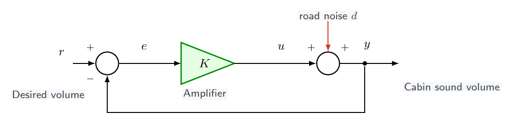
\[e = r - y, \qquad u = K e, \qquad y = u + d\]
From these relations we obtain \[y = \frac{K}{1+K}\,r \;+\; \frac{1}{1+K}\,d\]
This expression shows two important effects. First, the contribution of the reference \(r\) is multiplied by \(\tfrac{K}{1+K}\), which approaches \(1\) as \(K\) becomes large, so increasing the gain improves the accuracy with which the system reproduces the desired volume. Second, the disturbance \(d\) is multiplied by \(\tfrac{1}{1+K}\), which becomes small when \(K\) is large, so the effect of road noise is attenuated by feedback.
The system automatically compensates for increased road noise, so the driver no longer needs to adjust the volume manually. The sensitivity to disturbances is reduced by the factor \(\tfrac{1}{1+K}\).
Cruise Control: Manual vs Feedback Control
We study cruise control — maintaining a desired constant speed in a car — first with manual (open-loop) control, then with feedback (closed-loop) control.
We consider the following simplified system model for a car operating around a nominal speed of approximately \(55\ \text{mph}\):
A \(1\%\) change in throttle position is assumed to produce approximately \(+10\ \text{mph}\) change in speed, while a \(1\%\) change in road grade produces approximately \(-5\ \text{mph}\) change in speed. We also approximate the engine dynamics as instantaneous, so that the system can be treated as a static gain in this introductory example.
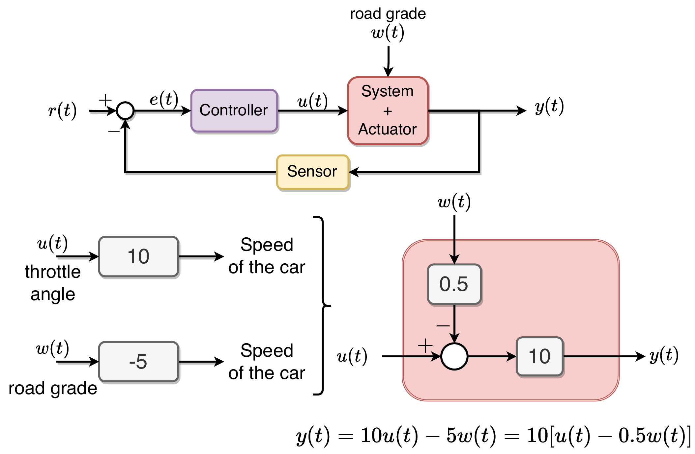
The problem is formalised in Figure [fig:cruisecontrol2] and also visualised in Figure [fig:cruisecontrol]. Hence, the speed of the car can be modelled as \[y(t) = 10u(t) - 5w(t),\] where \(y(t)\) denotes the vehicle speed in mph, \(u(t)\) is the throttle angle in percent, and \(w(t)\) is the road grade in percent.
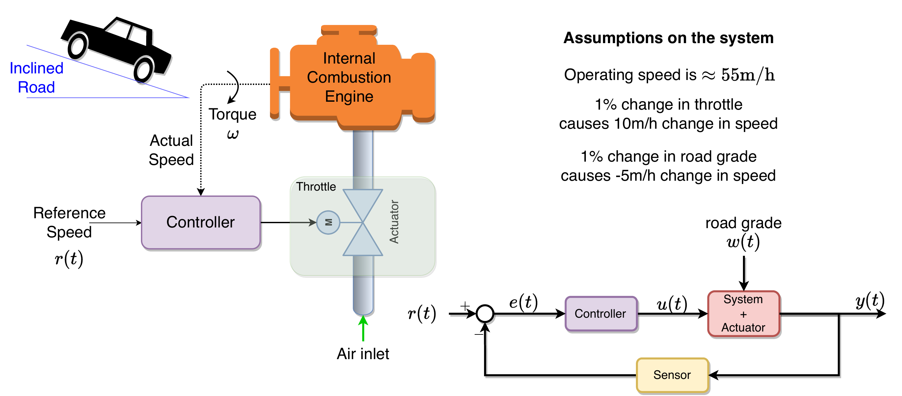
In open-loop control, the driver sets the throttle to a fixed value corresponding to the desired speed \(r(t)\). There is no feedback from the speed sensor. So the system is completely blind. For example, the driver may use the rule \[u(t) = \frac{1}{10}\,r(t).\] to get \(y(t)=r(t)\) when there is no disturbance (road flat, no wind, no friction etc.). Then, substituting into the system model gives: \[y_{OL}(t) = 10\cdot\frac{1}{10}r(t) - 5w(t) = r(t) - 5w(t).\]
This formula immediately shows the weakness of open-loop control. On a flat road, where \(w=0\), the speed matches the reference exactly. However, if the road grade increases so that \(w>0\), the vehicle speed falls; in this model, each \(1\%\) uphill slope reduces the speed by \(5\ \text{mph}\). The driver must then notice the change and manually adjust the throttle to recover the desired speed.
We define the percentage error as \[PE = 100\cdot\frac{|r(t)-y_{OL}(t)|}{r(t)}.\]
Let \(r(t)=55\ \text{mph}\). Table [tab:openloop] shows the open-loop performance for different slopes \(w(t)\).
| \(r(t)\) | \(w(t)\) | \(y_{OL}(t)\) | Percentage Error (%) |
|---|---|---|---|
| 55 | 0 | 55 | 0 |
| 55 | 1 | 50 | 9.1 |
| 55 | 2 | 45 | 18.2 |
| 55 | 0.1 | 54.5 | 0.9 |
We see that performance degrades directly with road slope.
To overcome the open-loop sensitivity to disturbances, we now add feedback.
Figure [fig:closedloop] shows the closed-loop cruise control system. The reference speed \(r(t)\) is compared with the actual speed \(y_{CL}(t)\) at a summing junction, producing the error signal \[e(t) = r(t) - y_{CL}(t).\]
This error is amplified by the controller \(C\) which is set to \(100\), which produces the throttle command \(u(t)\). The plant \(P\) (the system and actuator) then converts the throttle into the vehicle speed \(y_{CL}(t)\).
In order to work out this system, one needs to know how to find the gain from the input \(R\) to the output \(Y\) in a basic feedback interconnection. This is described in the Figure [fig:feedbackIC]. Here, a sensor \(H\) measures the actual speed and feeds it back to the summing junction which is absent in our system as we assume that the speed measurement is perfect and in the same unit with the reference speed. The road grade \(w(t)\) enters the plant as a disturbance.
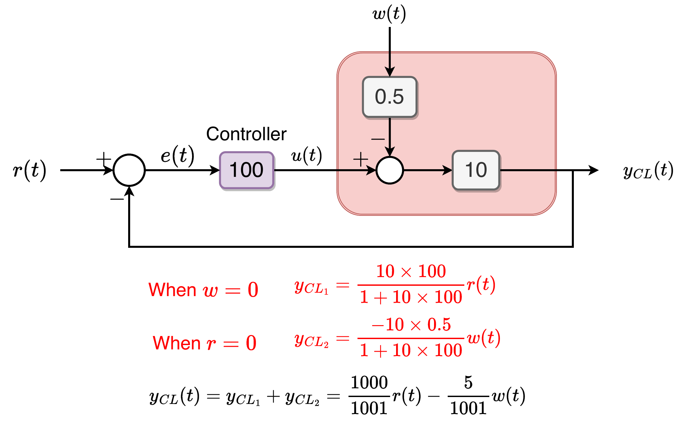
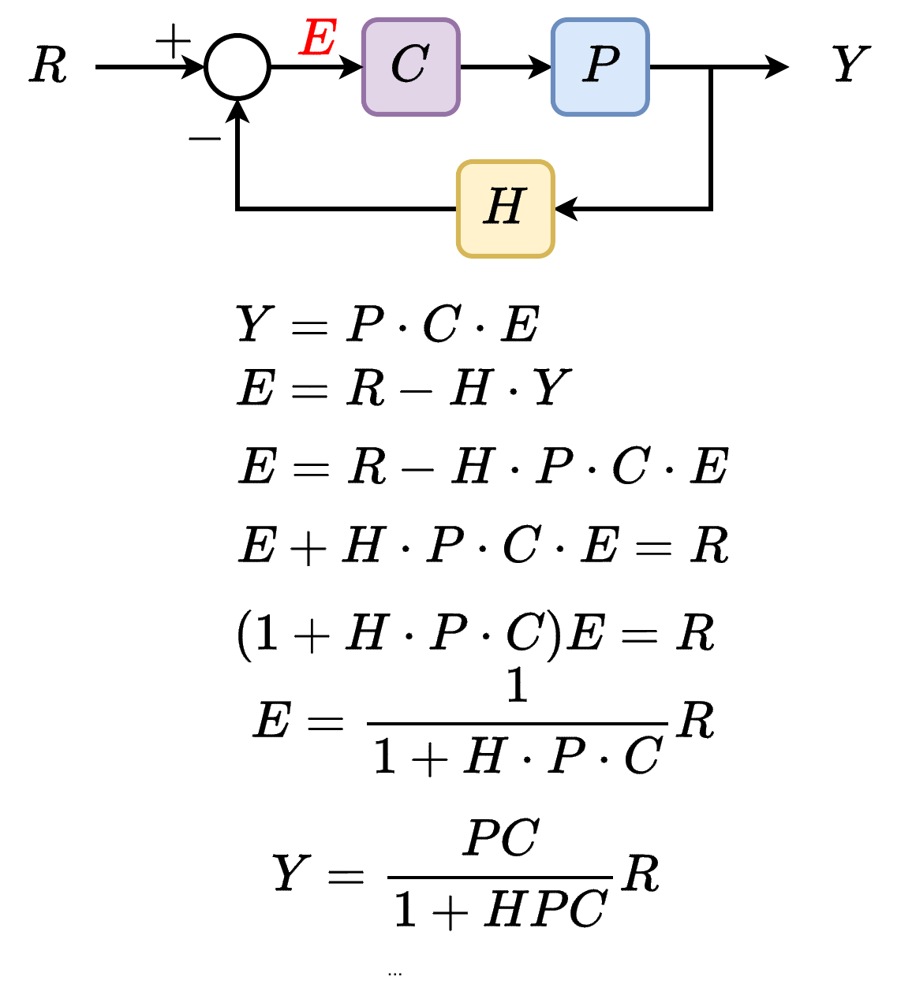
From Figure [fig:feedbackIC], the output and error signals satisfy \[Y = P \cdot C \cdot E, \qquad E = R - H \cdot Y.\] Substituting the first equation into the second: \[E = R - H \cdot P \cdot C \cdot E \quad\Longrightarrow\quad (1 + HPC)\,E = R \quad\Longrightarrow\quad E = \frac{1}{1+HPC}\,R.\] Therefore the cltf from \(R\) to \(Y\) is \[T(s) = \frac{Y(s)}{R(s)} = \frac{P(s)\,C(s)}{1 + H(s)\,P(s)\,C(s)}.\]
For our example: \[P = 10,\quad H = 1,\quad C = K = 100.\]
Thus, \[y_{CL}(t) = \frac{10 \cdot 100}{1 + 10 \cdot 100}r(t) \;-\; \frac{5}{1 + 10 \cdot 100}w(t).\]
Numerically: \[y_{CL}(t) = \frac{1000}{1001}r(t) - \frac{5}{1001}w(t).\]
Table [tab:closedloopresults] shows the steady-state vehicle speeds, percentage errors, and system gain for various values of the disturbance \(w(t)\).
| \(r(t)\) | \(w(t)\) | \(y_{CL}(t)\) | Percentage Error (%) |
|---|---|---|---|
| 55 | 0 | 54.945 | 0.10 |
| 55 | 1 | 54.940 | 0.11 |
| 55 | 2 | 54.935 | 0.12 |
| 55 | 5 | 54.920 | 0.15 |
| 55 | 10 | 54.895 | 0.19 |
For reference, recall that in the open-loop design: \[y_{OL}(t) = r(t) - 5w(t).\]
This meant that a \(2\%\) slope caused a \(10\ \text{mph}\) loss in speed, leading to an \(18.2\%\) error. In contrast, in the closed-loop design with \(C=100\), the error is reduced below \(0.2\%\), even under large disturbances.
The reference-tracking gain is \(\tfrac{1000}{1001}\approx 0.999\), so the speed nearly equals the desired value. The disturbance gain is \(\tfrac{5}{1001}\approx 0.005\), so road grade becomes almost negligible. Compared with the open-loop case, the percentage error drops from roughly \(9\%\)–\(18\%\) to below \(0.2\%\). This is why we use the feedback interconnection exclusively in this module.
Figure 1.6 illustrates feedback in two non-engineering domains.
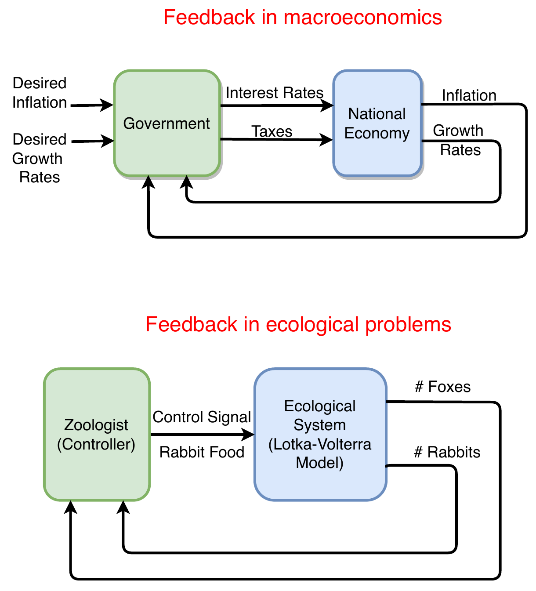
In an economy, the government plays the role of a controller. It receives information about the current inflation rate and economic growth (feedback) and compares them with the desired targets. Based on the difference, it adjusts policy tools such as interest rates and taxation. These control actions influence the behaviour of the national economy, which in turn produces new values for inflation and growth rates, completing the feedback loop. Without such feedback, the economy could easily deviate from its desired path.
Think of an ecosystem with rabbits (prey) and foxes (predators). When rabbits are plentiful, foxes have more food and their numbers rise. As foxes increase, they consume more rabbits and the rabbit population falls. With fewer rabbits available, fox numbers then fall, allowing rabbits to recover. This interaction naturally creates repeating rises and falls.
Uncontrolled case: If nobody intervenes, the populations are left to evolve on their own. In Figure 1.7(a) (solid lines), the rabbit population occasionally drops to very low levels, which could be risky in reality.
Controlled case (feedback intervention): Now imagine a manager monitors the rabbits. When rabbit numbers become too low, they provide support (e.g., extra food or habitat help). This is feedback: measure what is happening and act only when necessary. In Figure 1.7(a) (dashed lines), the rabbits are prevented from falling as dangerously low, and the overall swings are reduced. Figure 1.7(c) shows the support effort over time: it is applied only when needed and is naturally limited by available resources.
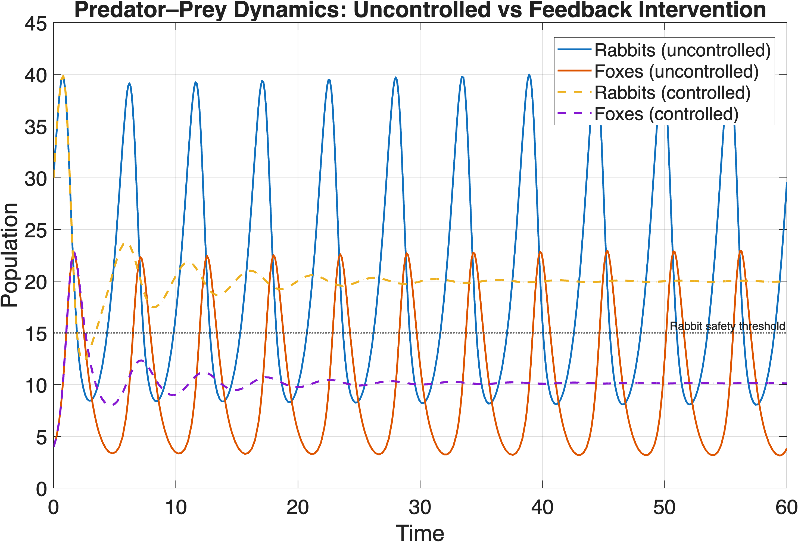
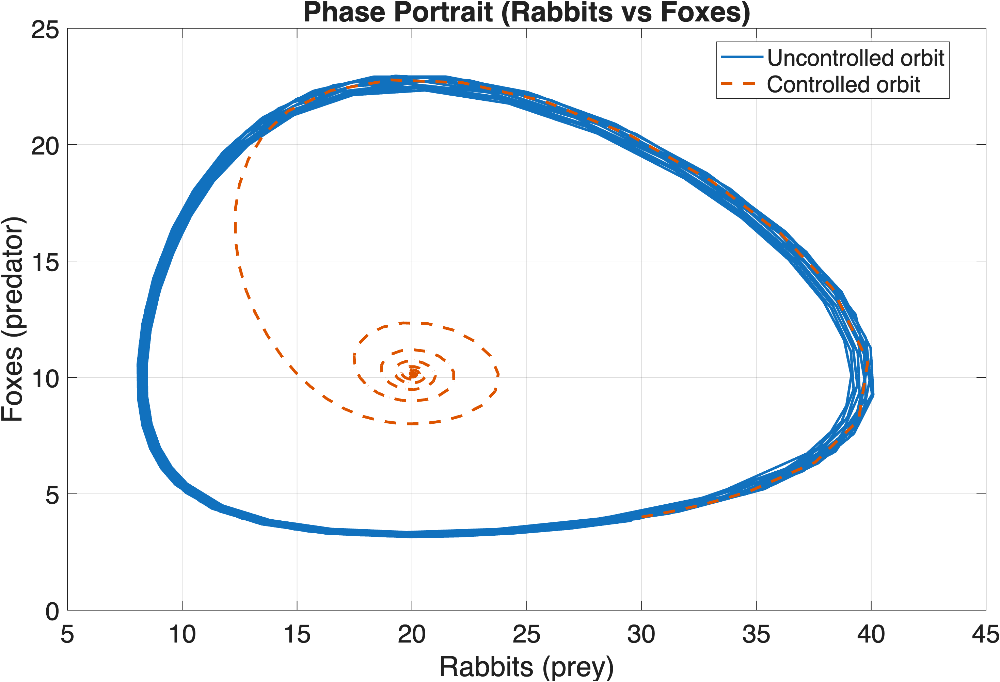
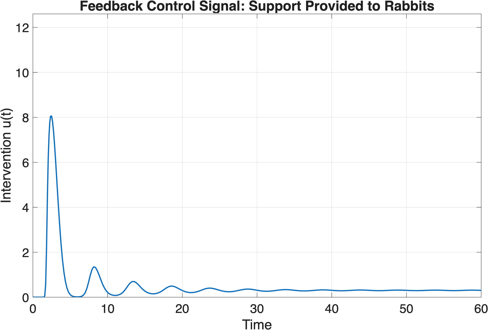
Feedback Control in Blood Glucose Regulation
An important medical application of feedback is the artificial pancreas used by diabetic patients, shown in Figure [fig:pancreas].
A continuous glucose monitor (CGM) measures blood glucose every few minutes, a control algorithm computes how much insulin is needed, and an insulin pump delivers it. The objective is to keep blood glucose within its normal range. In control terminology, the blood glucose level \(y(t)\) is the controlled variable, the insulin infusion rate \(u(t)\) is the manipulated variable, and meals, exercise, and stress act as disturbances. The continuous glucose monitor (CGM) is the sensor, the insulin pump is the actuator, and the patient’s glucose–insulin dynamics form the plant. The controller is the algorithm running on a microprocessor, which computes \(u(t)\) from the error \(e(t)=r(t)-y(t)\), where \(r(t)\) is the desired glucose level and \(y(t)\) is the measured glucose level. In operation, the CGM measures glucose continuously, the controller compares that measurement with the desired target, and the pump delivers insulin accordingly. In this way, the loop compensates for disturbances such as meals and helps maintain glucose within safe bounds.
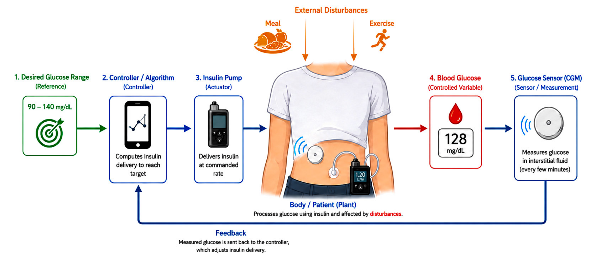
Control system design follows four main stages, illustrated in Figure 1.8.
The first step is to develop a mathematical model of the physical system (plant). The model captures the essential dynamics of the system, including the effects of actuators, sensors, and possible disturbances. Depending on the application, this can be achieved using physical laws, system identification techniques, or a combination of both.
Once the model is established, it is analysed to understand the system’s behaviour. This includes studying stability, transient response, and frequency response. Analysis helps to identify system limitations and determine the requirements for control.
Based on the analysis, a controller is designed to meet the desired performance objectives. The controller can be designed using techniques such as PID tuning, root locus, frequency response, or modern state-space methods. The goal is to ensure accuracy, robustness, and efficiency.
The designed controller is then implemented, often using digital hardware and software. Practical considerations such as sensor noise, actuator saturation, and computational delays are taken into account. At this stage, the system is tested and, if necessary, the model and controller are refined.
The controller design process is iterative. Feedback from the implementation stage may require revisiting the modelling and analysis steps to achieve satisfactory performance.
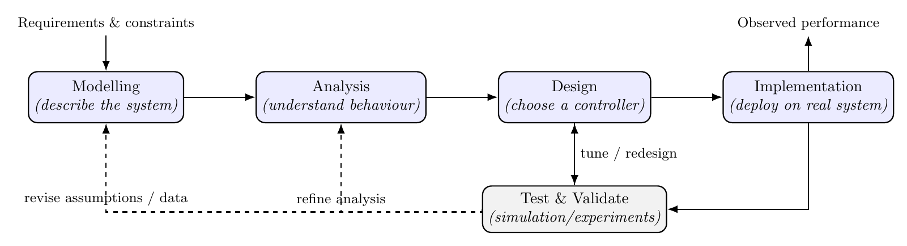
The roots of feedback control can be traced back to ancient regulation devices. Water clocks (clepsydras) in ancient Greece and China used float regulators to maintain a roughly constant water level, making them early examples of automatic adjustment. During the Islamic Golden Age, Al-Jazari designed mechanical devices such as fountains and clocks that used rudimentary feedback-like mechanisms . A major industrial milestone came in the eighteenth century, when James Watt’s centrifugal governor (1788) was used to regulate steam-engine speed automatically .
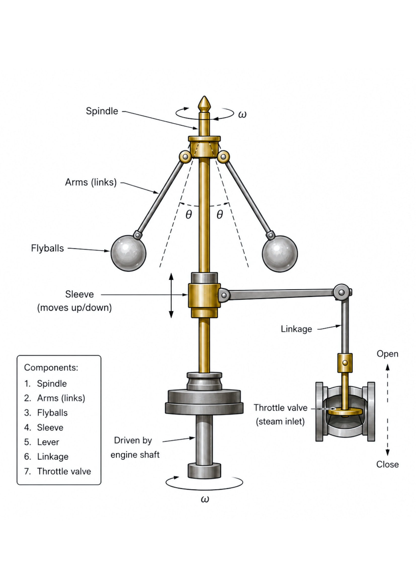
The mathematical study of feedback began in earnest in the nineteenth century. James Clerk Maxwell’s 1868 paper on Watt’s governor introduced differential equations as a tool for analysing feedback stability . Later, Edward Routh (1877) and Adolf Hurwitz (1895) developed algebraic tests for stability, which together became the well-known Routh–Hurwitz stability criterion .
In the early twentieth century, telephone and radio engineers, particularly at Bell Labs, were forced to confront instability in amplifiers and communication systems. Harry Nyquist responded by introducing the Nyquist stability criterion in 1932, using frequency-response ideas to determine when feedback systems remain stable . Hendrik Bode then developed gain–phase plots and related design methods in the 1930s and 1940s, tools that are still taught today . During World War II, the urgent demand for accurate gun aiming, radar, and autopilot systems accelerated progress in automatic control even further.
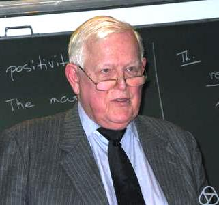
In the 1960s, Rudolf Kalman introduced state-space methods, which made it possible to study multivariable systems and formulate control problems in a much more general way. The Kalman filter then provided a powerful method for estimating system states in real time from noisy measurements . From this point onward, control theory became closely linked with linear algebra, estimation, and systems theory.
From the 1970s onward, the subject broadened again. Robust control emerged in the 1970s and 1980s to deal explicitly with model uncertainty and disturbance rejection, with tools such as \(H_\infty\) methods and \(\mu\)-synthesis . In the 1980s and 1990s, Model Predictive Control (MPC) became widely used in process industries such as oil refining and chemical plants . Since the 2000s, control has become deeply integrated with digital computation, data-driven methods, and artificial intelligence. Applications now range from autonomous vehicles and renewable energy systems to biomedical devices such as artificial pancreases, unmanned air and underwater vehicles, and smart grids.
Control has evolved from mechanical regulators in ancient water clocks to advanced algorithms running on microprocessors. Throughout, the central idea has remained the same: measure, compare, and adjust.
Try it yourself The following short MATLAB script builds the cruise control example from this chapter and compares open-loop with closed-loop behaviour. Type these commands in the MATLAB Command Window or save them as a script (Listing [lst:ch1_cruise_control]).
Open-loop vs closed-loop cruise control comparison.
import numpy as np
import matplotlib.pyplot as plt
import control as ctrl
P = 10 # Plant gain (mph per % throttle)
C = 100 # Controller gain
# Open-loop: output = P * input (no feedback)
G_ol = ctrl.tf([P], [1]) # Transfer function: 10/1
# Closed-loop: T = PC / (1 + PC)
G_cl = ctrl.feedback(G_ol * C, 1)
# Compare step responses
_resp = ctrl.step_response(G_ol)
t1, y1 = _resp.time, _resp.outputs
_resp = ctrl.step_response(G_cl)
t2, y2 = _resp.time, _resp.outputs
plt.figure(figsize=(8, 4))
plt.plot(t1, y1, label='Open-loop (no feedback)')
plt.plot(t2, y2, label='Closed-loop (with feedback)')
plt.xlabel('Time (s)')
plt.ylabel('Speed (mph)')
plt.title('Cruise Control: Open-Loop vs Closed-Loop')
plt.legend()
plt.grid(True)
plt.tight_layout()
plt.show()
# Display the closed-loop transfer function
print('Closed-loop transfer function:')
print(G_cl)P = 10; % Plant gain (mph per % throttle)
C = 100; % Controller gain
% Open-loop: output = P * input (no feedback)
G_ol = tf(P, 1); % Transfer function: 10/1
% Closed-loop: T = PC / (1 + PC)
G_cl = feedback(G_ol * C, 1);
% Compare step responses
figure;
step(G_ol, G_cl, 5); % Simulate for 5 seconds
legend('Open-loop (no feedback)', 'Closed-loop (with feedback)');
title('Cruise Control: Open-Loop vs Closed-Loop');
grid on;
% Display the closed-loop transfer function
disp('Closed-loop transfer function:');
G_clKey Takeaways
Open-loop control acts without measuring the output; closed-loop (feedback) control measures the output and corrects errors automatically.
Every feedback loop has the same structure: reference, error, controller, actuator, plant, sensor, and disturbance.
The closed-loop transfer function for a unity feedback system with loop gain \(L\) is \(T = \frac{L}{1+L}\), and the disturbance sensitivity is \(\frac{1}{1+L}\).
High loop gain improves tracking accuracy and disturbance rejection, but practical limits (actuator saturation, instability) prevent making the gain arbitrarily large.
On–off control with hysteresis is the simplest feedback strategy; more advanced methods (PID, state feedback) are introduced in later chapters.
Feedback appears across engineering, biology, economics, and ecology — the same measure-compare-adjust principle applies everywhere.
Controller design follows a systematic cycle: model, analyse, design, implement, and validate.
(Identifying Open-Loop vs Closed-Loop Systems) For each of the following systems, state whether it operates in open-loop or closed-loop mode, and briefly justify your answer.
A washing machine that runs a fixed 40-minute cycle regardless of how clean the clothes are.
A self-driving car that adjusts its steering based on camera and LIDAR measurements of the road.
A sprinkler system on a timer that waters the garden every morning at 7 am.
An oven with a built-in thermostat that switches the heating element on and off to maintain a set temperature.
A traffic light that changes on a fixed timer with no sensors.
A modern air conditioning unit that adjusts its fan speed based on a room temperature sensor.
(Feedback Components) Consider a domestic hot water system where a boiler heats water to a user-selected temperature. A temperature sensor measures the water temperature and a controller switches the burner on or off.
Identify the reference, sensor, controller, actuator, plant, and disturbance in this system.
Draw a simple block diagram of the feedback loop, labelling all signals (\(r\), \(e\), \(u\), \(y\)) and components.
What would happen if the temperature sensor failed and always reported \(0\,^{\circ}\mathrm{C}\)? Explain in terms of the error signal.
(Drawing Block Diagrams) A student uses a desk lamp with a dimmer to read a book. The student observes the brightness on the page (with their eyes), compares it to the brightness they want, and adjusts the dimmer knob accordingly.
Is this an open-loop or closed-loop system? Justify your answer.
Draw a block diagram of this system, labelling the reference (desired brightness), sensor (eyes), controller (brain), actuator (hand on dimmer), plant (lamp and room), and output (actual brightness on the page).
Suggest one disturbance that could affect this system.
(Cruise Control Calculations — Varying the Controller Gain) Recall the cruise control example from this chapter. The plant gain is \(P=10\), the sensor gain is \(H=1\), and the system model is \(y(t) = 10\,u(t) - 5\,w(t)\). The closed-loop output is: \[y_{CL}(t) = \frac{10C}{1+10C}\,r(t) - \frac{5}{1+10C}\,w(t),\] where \(C\) is the controller gain.
For \(C = 10\), compute the closed-loop speed \(y_{CL}\) when \(r = 55\) mph and \(w = 2\%\). What is the percentage error?
Repeat the calculation for \(C = 50\) and \(C = 500\).
Fill in a table comparing the three controller gains (\(C = 10,\; 50,\; 500\)) in terms of steady-state speed and percentage error for \(w = 2\%\).
What happens to the disturbance rejection as \(C\) increases? Is there any practical reason we might not want \(C\) to be extremely large? (Hint: think about what a very large gain does to the control signal \(u(t)\).)
(Benefits and Limitations of Feedback)
List three advantages of closed-loop (feedback) control over open-loop control.
Give one example of a situation where open-loop control might be acceptable or even preferred over closed-loop control.
A friend argues: “Feedback control always makes a system better.” Explain, using the concept of instability, why this statement is not always true.
(Cruise Control — Open-Loop Analysis) Using the open-loop cruise control model from the chapter: \[y_{OL}(t) = r(t) - 5\,w(t),\]
If the desired speed is \(r = 70\) mph and the road grade is \(w = 3\%\), what is the actual speed? What is the percentage error?
What road grade \(w\) would cause the open-loop speed to drop to \(40\) mph when \(r = 55\) mph?
Explain in your own words why the open-loop system cannot correct for disturbances.
(Feedback in Everyday Life) Choose one of the following systems and describe, in your own words, how feedback operates within it. Identify the reference, sensor, controller, actuator, plant, and at least one disturbance.
A person balancing on one leg.
A toilet cistern refilling after a flush.
The pupil of your eye adjusting to bright sunlight.
(On–Off Control and Hysteresis) Consider the room heating example from the chapter, where the set point is \(21\,^{\circ}\mathrm{C}\).
In pure on–off control (no hysteresis), explain why the heater switches very frequently near the set point.
A hysteresis band of \(\pm 1\,^{\circ}\mathrm{C}\) is introduced. At what temperatures does the heater switch on and off?
Explain one advantage and one disadvantage of increasing the hysteresis band to \(\pm 3\,^{\circ}\mathrm{C}\).